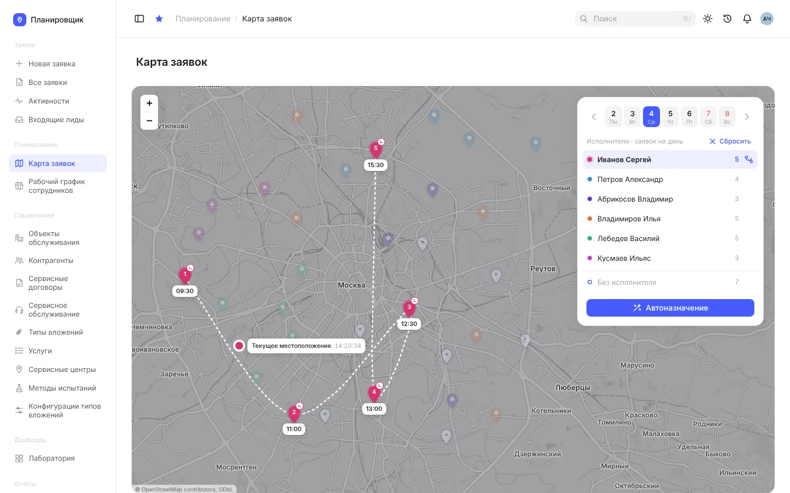
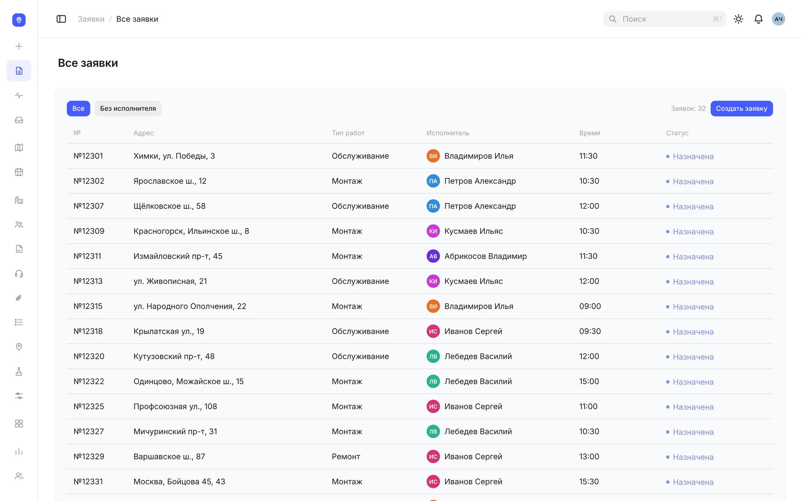
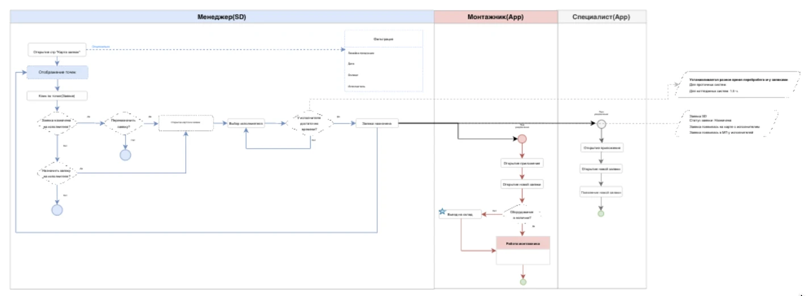
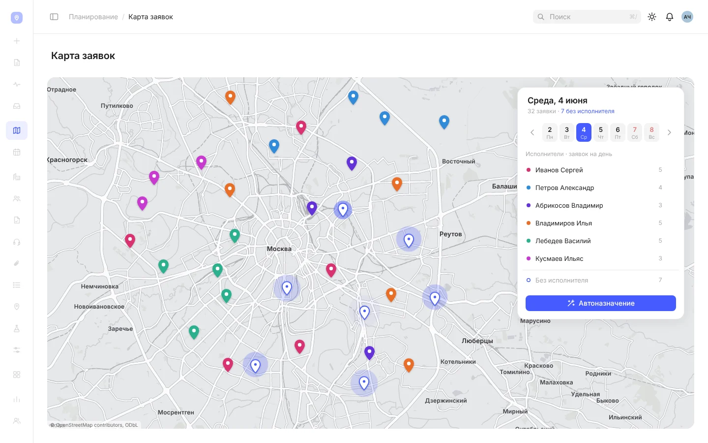
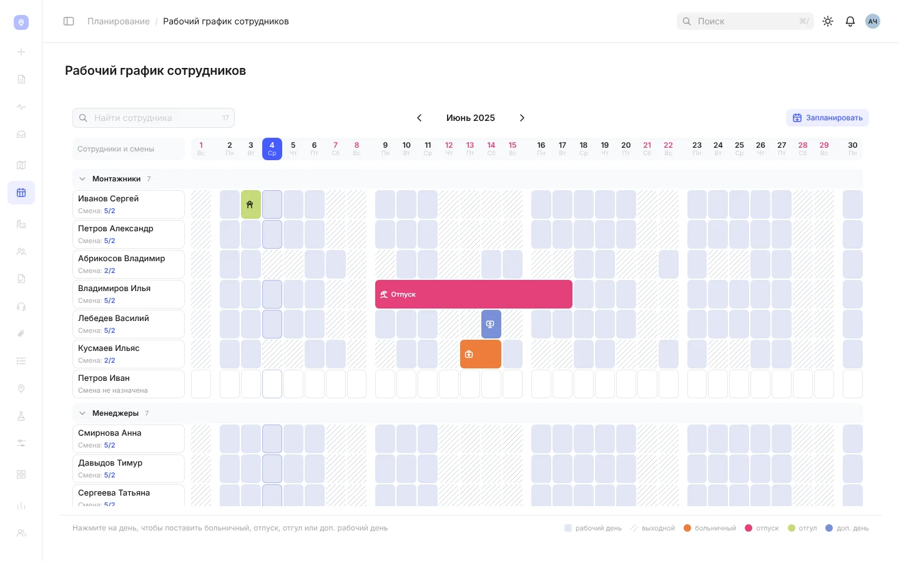
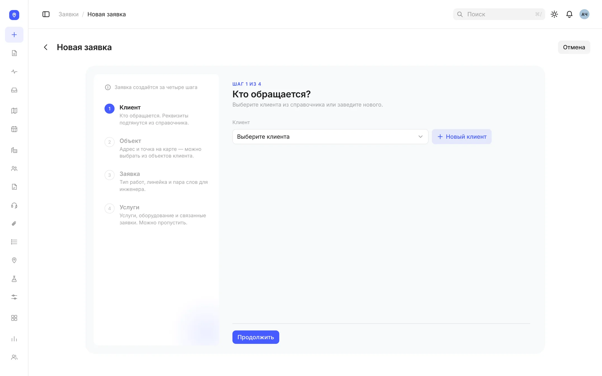
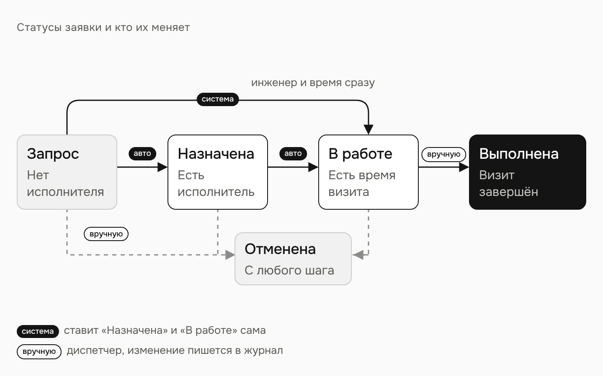

Операционная система сервисной компании: заявки, график смен и карта выездов в одном интерфейсе.
Продукт
Платформа для заявок, выездных инженеров и обслуживания объектов. Web для офиса и мобильный интерфейс в поле
Моя роль
Единственный дизайнер, работала с бизнес-заказчиком, аналитиком и командой разработки
Статус
Внедрено, есть данные за год работы

Проблема
Заявки жили в CRM, график сотрудников в 1С, выезды координировали вручную. Общую картину загрузки и маршрутов менеджер собирал сам.
Что я сделала
Спроектировала интерфейс системы: карту заявок, график смен, создание и карточку заявки, историю объекта. Собрала интерактивный прототип.
Результат
Система внедрена. Через год: −20% потребности в монтажниках, −15% перепробегов, −80% штата координаторов.
Контекст
Компания монтирует и обслуживает оборудование у клиентов: в офисах, квартирах, отделениях банков, кафе и на складах. Инженеры каждый день выезжают к клиентам, и кто-то должен решить, кто куда едет и в какое время.

Все заявки: адрес, тип работ, исполнитель, время
МенеджерРаспределяет заявки и не видит реальную загрузку инженеров: сверяется с несколькими системами.
ИнженерАдрес, задачу и данные по объекту приходится уточнять отдельно, они не собраны в одном месте.
РуководительНет единой картины загрузки команды и состояния работ.
Моя зона. Я единственный дизайнер на проекте: интерфейс, сценарии, состояния и интерактивный прототип. Процесс описывали вместе с заказчиком и аналитиком: я переводила его в схемы, а по ним проектировала карту заявок и остальные экраны. Реализовывала команда разработки.
Проблема
Было: CRM, 1С и ручная координация
Три источника правдыЗаявки в CRM, смены и отпуска в 1С, выезды по договорённости. Чтобы назначить визит, нужно было сверить всё вручную.
Нет картины дняНе видно, кто из инженеров свободен, где он сейчас и сколько у него заявок.
Объект без историиКаждая заявка жила отдельно, поэтому оборудование и сроки обслуживания на объекте не отслеживались.
Как я разбиралась в процессе

Моя схема процесса по ролям. Детали процесса под NDA
Процесс разбирали вместе с заказчиком, аналитиком и командой. Боли менеджера, инженера и руководителя известны со слов заказчика, схемы процесса по ролям рисовала я.
Вопросы к процессуКак появляется заявка, кто решает, какого инженера назначить, как проверяют его загрузку, где хранятся смены и как инженер узнаёт о выезде.
Что собралаCJM, use cases, схемы процесса по ролям, user flow и информационную архитектуру. Проектировала связи между сущностями, а не отдельные экраны.
Самое сложноеЗаявки, график и карта зависят друг от друга. Если инженер уходит в отпуск, это меняет и назначение новых заявок, и уже запланированные выезды.
ПроверкаПрототип протестировали до разработки. Обратная связь с первого раза была хорошей, переделывать сценарии не пришлось.
Ключевые решения
Одна карта на один день
Вопрос
Диспетчеру каждый день нужен ответ: кто, куда и когда едет.
Решение
Всё на карте привязано к выбранной дате. Клик по инженеру сразу строит его маршрут по визитам в порядке времени, отдельной кнопки «Маршрут» нет. Справа список исполнителей со счётчиком заявок, строка «Без исполнителя» и автоназначение.
Почему
Назначить или перенести визит можно, не уходя с карты: кнопка в карточке метки меняется по состоянию заявки.

Попробовать картуРабочий прототип: выберите день и кликните по инженеру
Назначить инженера: было и стало. Экспертный разбор по прототипу, не замер на пользователях
График решает, можно ли назначить визит
Проблема
Смены и отпуска вели в 1С, а заявки назначали в другой системе, не глядя на них.
Решение
Доска «люди × дни» на 30 человек. Смены 5/2, 2/2 и 3/3 считаются автоматически, отпуск, больничный, отгул и дополнительный рабочий день ставятся перетаскиванием.
Почему
График стал источником правды для карты: отпуск или выходной по смене делает день недоступным для визита.

Попробовать графикРабочий прототип: поставьте сотруднику отпуск или больничный
Заявку заполняли с нуля, даже если клиент и объект уже были в системе.
Решение
Мастер «Клиент → Объект → Заявка → Проверка», на каждом шаге одно решение. Обязательных полей два, клиент и адрес, остальное подставляется из справочников.
Почему
Заявку из лида или из оборудования объекта мастер открывает уже заполненной.

Мастер заявки: четыре шага, два обязательных поля
Карточка без прокрутки
Решение
Шапка с номером, статусом, оплатой и действиями. Под ней сводка из шести плиток: клиент, объект, тип работ, исполнитель, визит, менеджер. Детали разложены по четырём вкладкам, чат с клиентом выдвигается справа.
Статусы
Запрос → Назначена → В работе → Выполнена, отдельно «Отменена». «Назначена» и «В работе» система ставит сама, ручная смена статуса пишется в журнал.

Статусы заявки и кто их меняет
От заявки к жизни объекта
Проблема
Заявки по одному объекту никак не были связаны между собой.
Решение
У объекта своя история: оборудование с серийным номером и датой монтажа, последнее и следующее обслуживание, контакты, другие заявки клиента.
Почему
Следующее обслуживание считается само, через год после последнего, и из строки оборудования сразу создаётся заявка на сервис.
Правила, а не только экраны
Самое сложное в системе было не в экранах, а в правилах, по которым они себя ведут. Их я описала вместе с макетами.
ПраздникиДля смены 5/2 праздник выходной, а смены 2/2 и 3/3 идут по своему циклу.
Норма отпускаПревышение подсвечивается, но не блокируется: решение остаётся за человеком.
Горизонт планированияТекущая неделя и три вперёд. Дальше карта подсказывает, что планирование ещё не открыто.
МаршрутСтроится от двух заявок, заявки без времени уходят в конец. Пока открыто автоназначение, клики по меткам заблокированы.
Результат через год
−20%потребность в монтажниках: точный расчёт времени работ уплотнил день инженера
−15%суммарная длина перепробегов
−80%штат координаторов: меньше ручного ввода, планирования и проверки работ
Данные компании после года работы системы. Это итог внедрения системы целиком, моя часть — интерфейс и правила, по которым диспетчер планирует день: карта, график, мастер заявки.
Этап
Что именно
Спроектировано
Карта заявок, график смен, мастер и карточка заявки, история объекта, статусная модель и правила состояний
Передано в разработку
Макеты и интерактивный прототип с рабочей логикой
Внедрено
Система работает в компании
Подтверждено данными
Три показателя выше
Выводы
Главное решениеСделать график источником правды для карты. Диспетчер не может назначить визит на день, когда инженер в отпуске или выходной по смене, и не держит это в голове.
Что сделала бы иначеПоговорила бы с диспетчерами напрямую, а не только с заказчиком: посмотрела бы их обычный день до проектирования карты, чтобы проверить боли не с чужих слов.
Что дальше
Умное назначениеАвтоназначение с учётом расстояния, загрузки и компетенций инженера.
Риски срываПрогноз перегрузки команды и предупреждения о заявках, которые могут не успеть.
Инженер в полеБолее глубокий мобильный сценарий: визит, оборудование и закрытие заявки с телефона.